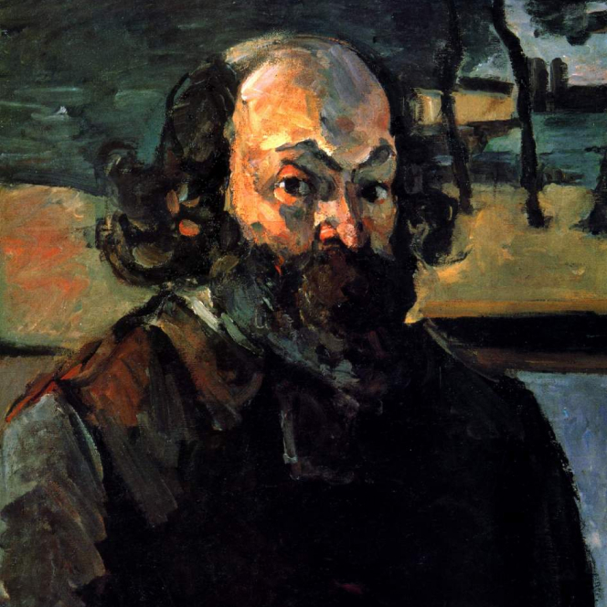

Paul Cézanne
1839.1.19 ~ 1906.10.22

A French painter who was active mainly in the late 19th century, he is praised as the father of modern art.
1839.1.19 ~ 1906.10.22
A French painter who was active mainly in the late 19th century, he is praised as the father of modern art.
Basket of Apples is an oil on canvas painting depicting a table holding a bottle and a basket full of apples. Cézanne challenged the idea of a linear perspective.
It depicts the Montagne Sainte-Victoire dominating the landscape of his hometown, Aix-en-Provence.In 1989 it was rated as one of Cézanne's greatest works.
The theme of 'players of cards' was inspired by Paul Cézanne, a frequent visitor to the Aix-Provence Museum as a young man, after seriously appreciating a work called 'People who played cards' by the Renin brothers around 1635 to 1640. presumed to have been received.